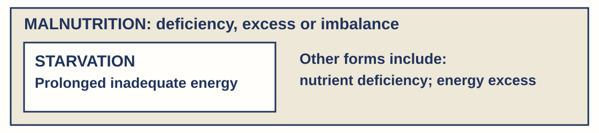

Balanced-diet support cards
Attempt first. Watch the coded example, then self-code your preserved response. Choose only the link(s) you corrected. Hide the content before each different recheck. Keep usual access.
N · Nutrient role
| Component | Function | Useful source |
|---|---|---|
| Carbohydrate | ____ | Rice, bread, potatoes |
| Protein | Growth and repair materials | Beans, lentils, eggs, fish |
| Fat / lipid | ____ | Oil, nuts, seeds |
| Vitamins | ____ | C: peppers; A precursor: carrots |
| Minerals | ____ | Iron: lentils; calcium: dairy/fortified alternatives |
| Fibre | ____ | Wholegrains, fruit, vegetables |
| Water | ____ | Drinking water; water in foods |
Model answer & mark scheme / criteria
Carbohydrate. Energy for respiration. Source: Rice, bread, potatoes
Protein. Growth and repair materials. Source: Beans, lentils, eggs, fish
Fat / lipid. Energy store; insulation; vitamin absorption. Source: Oil, nuts, seeds
Vitamins. Specific processes in small amounts. Source: C: peppers; A precursor: carrots
Minerals. Specific processes, e.g. iron for haemoglobin. Source: Iron: lentils; calcium: dairy/fortified alternatives
Fibre. Helps food move through the gut. Source: Wholegrains, fruit, vegetables
Water. Medium for many reactions; transport; cooling. Source: Drinking water; water in foods
Success criteria. Correct component/function/source link for the diagnosed row.
Different recheck · content is hidden
Carbohydrate
Oats supply carbohydrate. State a useful body function and one other useful source.
Model answer & mark scheme / criteria
Model response. Carbohydrate supplies energy for respiration. Another useful source is rice, bread or potatoes.
Success criteria. Energy for respiration. · Another useful carbohydrate source.
Protein
Chickpeas supply protein. State a useful body function and one other useful source.
Model answer & mark scheme / criteria
Model response. Protein supplies growth/repair materials. Other sources include lentils, eggs, fish or other beans.
Success criteria. Growth/repair. · Another useful protein source.
Fat
Seeds supply fat. State one useful body role and one other useful source.
Model answer & mark scheme / criteria
Model response. Fat can store energy, insulate or help fat-soluble vitamin absorption. Other sources include oil or nuts.
Success criteria. One accurate fat role. · Another useful fat source.
Vitamins
Broccoli supplies vitamin C. State a useful body role and one other useful C source.
Model answer & mark scheme / criteria
Model response. Vitamin C supports healthy connective tissues and wound healing. Peppers or citrus fruit are useful sources.
Success criteria. Specific vitamin-C role. · Another useful C source.
Minerals
A fortified cereal supplies iron. Name its component group, a useful body role and another source.
Model answer & mark scheme / criteria
Model response. Iron is a mineral. It is needed for haemoglobin and oxygen transport. Lentils, beans or meat are other sources.
Success criteria. Minerals. · Haemoglobin/oxygen transport. · Another useful iron source.
Fibre
Lentils supply fibre as well as protein. State fibre’s function and another useful source.
Model answer & mark scheme / criteria
Model response. Fibre helps food move through the gut. Wholegrains, fruit or vegetables are other useful sources.
Success criteria. Gut movement. · Another useful fibre source.
Water
Soup contains water. State one body function and another source.
Model answer & mark scheme / criteria
Model response. Water supports transport or cooling, or is a medium for many reactions. Drinking water or water within other foods supplies it.
Success criteria. One accurate water role. · Another source.
L · Deficiency link
Model answer & mark scheme / criteria
Model response. Iron → iron-deficiency anaemia; vitamin A → impaired night vision/vision loss, severe prolonged deficiency can cause blindness; vitamin C → scurvy; vitamin D → rickets in children. Not all anaemia is caused by iron deficiency. Rickets can have other causes, including calcium deficiency.
Success criteria. All four nutrient/effect pairs correct. · Use can cause, not a diagnosis.
Different recheck · content is hidden
Iron
Energy now meets needs but iron stays below needs for months. Does that remove the deficiency risk? Name the possible effect.
Model answer & mark scheme / criteria
Model response. No. Iron remains low, so iron-deficiency anaemia is still a possible risk; energy adequacy does not remove an iron gap.
Success criteria. Risk not removed. · Iron-deficiency anaemia. · Uses the remaining iron gap.
Vitamin A
Vitamin C now meets needs but A stays below needs for months. Name one possible A-deficiency effect.
Model answer & mark scheme / criteria
Model response. Vitamin A deficiency can impair night vision. Severe prolonged deficiency can cause blindness. Adequate C does not establish adequate A.
Success criteria. Impaired vision/night blindness or severe-deficiency blindness. · A, not C, is the stated gap.
Vitamin C
Vitamin D now meets needs but C stays below needs for months. Name one possible C-deficiency effect.
Model answer & mark scheme / criteria
Model response. Prolonged severe vitamin C deficiency can cause scurvy. Meeting D needs does not remove the C gap.
Success criteria. Scurvy. · Correctly links C, not D.
Vitamin D
Calcium meets needs but D stays below needs for months in a child. Name one possible effect.
Model answer & mark scheme / criteria
Model response. Vitamin D deficiency can cause rickets in children, even though calcium is stated to meet needs. This is a possible effect, not a diagnosis.
Success criteria. Rickets. · Correct D link and qualified effect.
B · Balance evidence

Complete: energy meets needs but vitamin A is low, so __.
Model answer & mark scheme / criteria
Model response. The record shows malnutrition without starvation: energy is adequate but vitamin A is below needs. Starvation is one form of malnutrition; malnutrition also includes excesses or other imbalances.
Success criteria. Uses both energy and nutrient facts. · Starvation within wider malnutrition category.
Different recheck · content is hidden
Balance evidence
Energy is adequate but iron is below needs for months: starvation, malnutrition, both or neither? Explain.
Model answer & mark scheme / criteria
Model response. Malnutrition without starvation: the named iron gap is a nutrient imbalance, while energy needs are met.
Success criteria. Malnutrition. · Not starvation because energy is adequate. · Named iron deficit.
J · Justified change
Finish with the supplied source fact. A bare “eat more” does not explain which gap changes.
Model answer & mark scheme / criteria
Model response. For example, low vitamin A → carrots supply beta-carotene → the body can convert it to vitamin A, helping address the stated gap. This does not prove the whole diet is adequate.
Success criteria. Choice supplies stated missing nutrient. · Explains gap addressed. · No unsupported whole-diet claim.
Different recheck · content is hidden
Justified change
Vitamin D is below needs. Given: oily fish provides D; extra rice provides energy. Which targets the stated gap, and why?
Model answer & mark scheme / criteria
Model response. Oily fish: the supplied fact says it provides vitamin D and so targets the D gap. Extra energy alone does not address the stated vitamin D deficiency.
Success criteria. Oily fish. · Vitamin D targets the gap. · Energy alone insufficient.